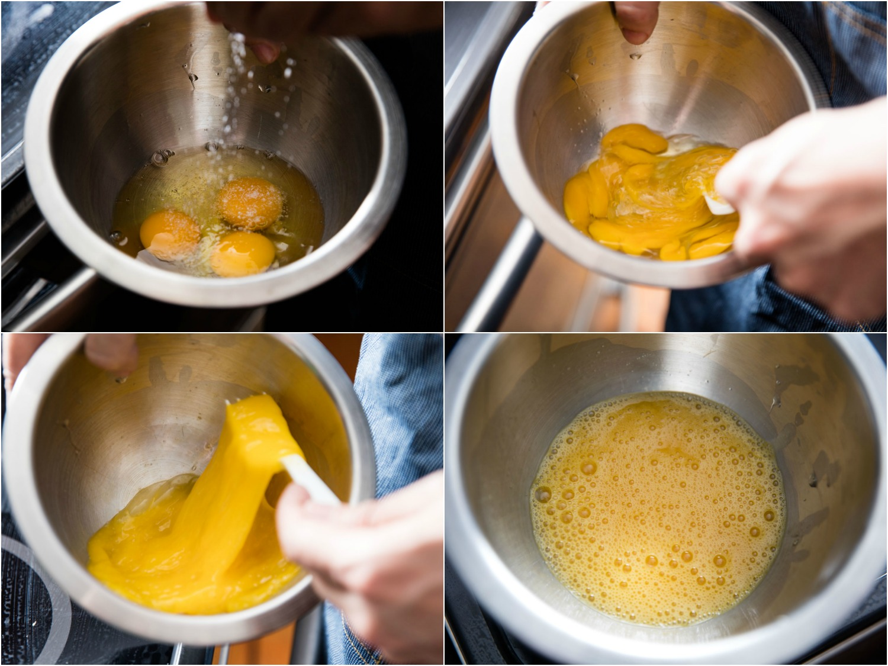

The classic french omelette
Introcuction
Equipment and Ingredients
Omletts are widly regarded as a simple and easy way to cook egg. But among professional chefs it is a mark of pride to take simple ingrediants and create an amazing plate of food. the more simple the recipy the harder it becomese to create amazing food without technical skills and a deep understanding of ingrediants.
Equipment and Ingridience
The Pan
To make to perfect omelette you need to select the perfect pan. The curvature and height of the pan walls conducts the heat is particular ways that allows the egg to cook evenly and for the liquid to evaporate. By using a non-stick pan you are able to avoid using excess lubricant (oil, butter or cooking margarine) this highlights the flavour of the egg and helps keep them light and fluffy.

Fork
The egg will need to be beaten before being added to the pan and once the egg is in the pan it will need to be stirred . There are many different utensils that can do this job but none are more simple than a fork.
It's a good idea to use a plastic or wooden fork so as not to damage the pan.
The Eggs
Not all eggs are made equal. The condition for the chickens can effect he flavour, like all animals when we are stressed or depressed our bodies generate hormones and chemicals. these chemicals can effect the way the egg cooks and tests. Free range organic eggs have less amounts of unwanted hormones and chemicals and so are the perfect main ingredient.
The size of egg can result in differing cooking times and thickness of the finished omelette. We will be using medium size egg for consistent results.
Salt
Adding salt to foods helps certain molecules in those foods more easily release into the air, thus helping the aroma of the food, which is important in our perception of taste. In small amounts it also tastes pretty good.
Chives
Chives belong to the same family as onion but are more sumbele in flavour and aroma. Onion retains liquid and can result in a more runny omlet. The egg can become overcooked before the onion is to your liking. and so Chives are a better option to add a more complex flavour to your eggs.
Getting tequnical
Now we know the ingredients and the equipment we need learn how they affect each other.
The size of the pan and amount of egg in the pan will effect the cooking time and thickness for the finished product. Below is a table that gives a good indication of egg to pan size ratio.
| Number of eggs | Pan diameter in centimeters | Pan diameter in inches |
|---|---|---|
| 1 | 12cm | 4'7″ |
| 2 | 17cm | 6'7″ |
| 3 | 20.8cm | 8'2″ |
| 4 | 24cm | 9'4″ |
| 5 | 26.8cm | 10'5″ |
| 6 | 29.4cm | 11'5″ |
| 7 | 31.7cm | 12'5″ |
| 8 | 33.9cm | 13'3″ |
| 9 | 36cm | 14'1″ |
| 10 | 37.9cm | 14'9″ |
These numbers wore reached by following istructions from frensh chef Jacques Pepin, who is widly regarded as a omlett master. Pepin recogmends using four eggs in a 24cm pan.
Step One:
Begin by cracking four medium eggs into a mixing bowl, season them with salt and add a good pinhe or finly chopped chives, and, using the same fork you'll use to cook the omelette, beat the eggs just until no traces of visible white remain.
The yolk and whites cook at different rates so need to be fully incorporated to cook evenly.
People use to belive that adding salt to egg makes the end result more watery. This in not inface the case, the salt reacts with the egg giving it a more translucent appearance that was mistaken for wateriness.
Step Two:
Set your pan over moderate heat and melt a tablespoon or so of butter in it, swirling constantly. When the butter is fully melted and foamy, it's hot enough. Now add the egg to the pan.
Take the fork now, and, with its tines up, start stirring quickly, working it all over the pan to break up large curds that form on the bottom. Simultaneously shaking the pan back and forth with your other hand helps keep the egg in motion while you stir—the more the egg moves around in the pan, the more evenly it cooks.
The key is to not scramble them to the point of forming separate curds that will never come back together again. Learning to find that sweet spot of doneness is the single most important skill in omelette-making; it may take a few practice runs before you get a good feel for it, but it's something anyone can learn. This is a case in which folks with gas flames have a distinct advantage over those with electric-coil or induction cooktops, as a gas flame will heat around the sides of the pan as well, making it easier to get a clean, well-defined edge to your eggs.
As soon as you've hit that perfect point, stop scrambling and use your fork to smooth the egg out and scrape down any wispy bits around the edges. You can even give the pan a few taps against the cooktop to help settle it all down, running the fork around the edge to loosen up the lips of the omelette. Some chefs like to tilt the pan while the eggs are still quite runny, letting the bulk of the egg collect in the bottom curve of the pan, which creates a more extreme contrast between the set edge and the very soft center.
At this point, if the egg on top of your creamy little pancake looks like it needs to cook a hair more, just let it linger over the flame an extra moment or two. Don't worry yourself too much about browning. While it's true that the platonic French omelette has no trace of browning on its surface, a little bit won't hurt. (Plus, like I said before, that moderate heat will ensure that the omelette doesn't brown too quickly.)
Step Three:
Next, tilt the pan up by the handle, and, using your fork, roll the omelette down in half over itself. At this point, you can move the pan off the heat, unless you're still trying to cook some of the egg.
This is the part where the pros do the fist-bump on the handle to jump the omelette toward the lower edge of the pan. Feel free to try that if you want, but don't get scared off thinking it's a necessary move. You can just as easily use the fork to wiggle and prod the omelette down into the curve of the pan. A good nonstick finish will make this easy.
Try to push it far enough that the lower lip of the folded omelette juts out of the pan, then use your fork to push it up, closing the omelette.
Step Four:
Now push the omelette a little closer to the edge of the tilted pan, let the pan hover directly above a plate, and tip the pan to roll it out. The seam should be on the bottom, and the omelette should be almond- or cigar-shaped.
If it doesn't look quite right, you can always use a couple of forks—or a clean kitchen towel, laid over the omelette—to adjust the omelette's shape and position on the plate.